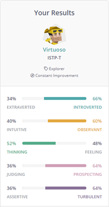
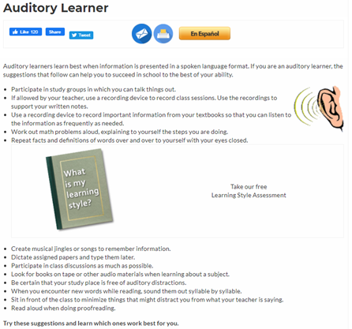
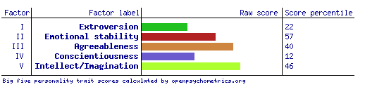

Mysers-Briggs
Learning Style Test
Big 5 personality test
Take-aways from these results
After taking these tests and looking at the results of each, I can confidently say that I think these are accurate and I agree with most of what they are saying about myself with a couple of exceptions in the Myers-Briggs test, but they are only very minor disagreements. For example, while I do agree that I am in general more introverted and take a more passive role within a group, I am able to take charge of a situation or of a team if no one else is putting themselves forward and will usually fill this role comfortably if it does come up.
My interpretation of these test results leads me to believe that by default, my role within a team will more so take on a follower role where while I am not going to be the one leading the conversation, I would still play an active part in the discussion, and based on these results, I would be a fairly easy person to work with in a group due to my agreeableness. Due to my auditory learning nature, the best way for me to get the ball rolling and start understanding the task at hand in a team environment would be through group meetings where we toss ideas out at each other and see what sticks.
When forming a team, I should look for people who are able to take charge of a group and start steering it in the right direction, while still being able to take ideas and encourage discussion from the rest of the group. To this end, I believe an ideal group for me would be people who are open to having frequent and extensive written or verbal discussions about our tasks. As an individual within the team, I should look to make a written and typed record of what has been discussed by the group in order to go back and listen, and ensure I’ve correctly absorbed the information from the meeting.